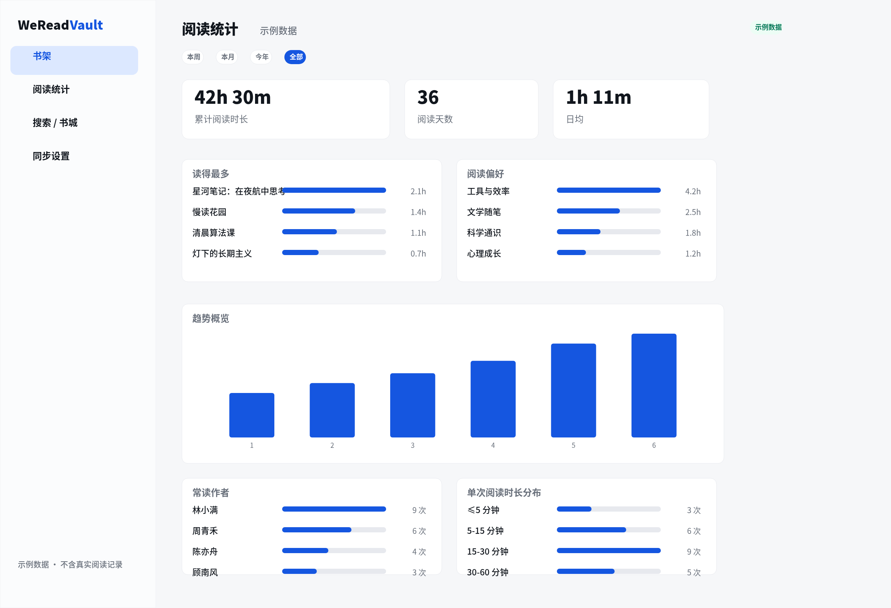

把微信读书的书架、划线、想法和阅读统计，归档到你自己电脑上的一个 SQLite 文件。
本地网页浏览、搜索、导出——数据不上传，AI 也能直接读。零第三方依赖，纯 Python。
个人数据归档工具，不是官方客户端。只同步你自己的数据。
数据只存本机一个 SQLite 文件，可备份、迁移、离线，永不上传；网页只监听 127.0.0.1。
同步整个书架（800+ 本，含无笔记的书与公众号分组），不只是有笔记的那几百本。
周/月/年/全部切换、同比、读得最多、偏好分类、时段分布、GitHub 式划线热力图、碎片化结论。
看「大家都在划的句子」（含人数）和公开书评，搜书城，看同作者的相关书。
CLI 暴露整套微信读书 API + 只读 SQL + 统计 JSON，可直接交给 Claude Code / Codex / OpenClaw；自带荐书 Skill。
Markdown（含封面、可合并他人热门划线去重）、Obsidian、flomo、Notion。
# 需要 Python 3.10+，无第三方依赖
git clone --recurse-submodules \
https://github.com/dull-bird/weread-vault.git
cd weread-vault && pip install -e .
weread-vault init
export WEREAD_API_KEY='你的 key'
weread-vault sync
weread-vault serve --open或把安装说明发给 Claude Code / Codex / OpenClaw，让 agent 帮你装。

进度与推荐值用进度条体现差异，每条笔记一键复制，可跳转微信读书。